Cómo crear el videojuego Arkanoid
En este tutorial desarrollaremos un juego inspirado en el clásico Arkanoid, este típico juego donde hay una pequeña plataforma que impide que una bola salga de la zona de juego, haciéndola rebotar, y en la parte superior hay ladrillos o bloques, que desaparecen al ser tocados por la bola, pero con la particularidad de que necesitan un número de toques para desaparecer.
Primer paso
Abrimos el editor de Pilas, borramos los actores que tengamos inicialmente para tener el escenario limpio y poder comenzar a trabajar.
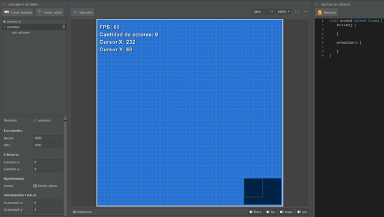
Vamos a configurar el escenario de juego, le agregaremos un fondo (que puede ser el que queramos) y le daremos un nombre. Para eso seleccionamos la “escena1” y vamos a modificar sus atributos.
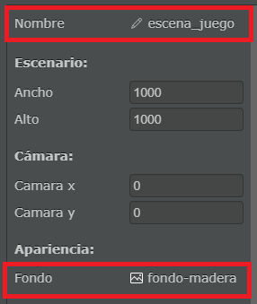
En este caso, llamaremos a la escena “escena_juego” y seleccionaremos un fondo con madera para darle ambiente a nuestro juego.
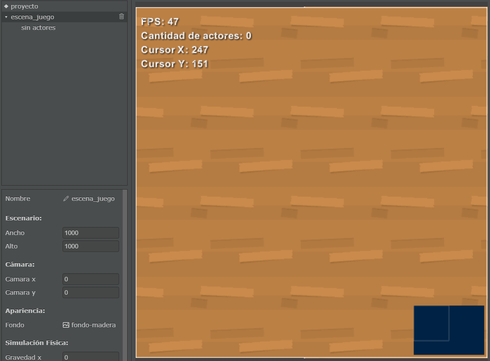
Crearemos los bloques del juego, seleccionamos el botón “Crear actor”, al presionar este botón se nos abrirá la siguiente ventana y seleccionaremos la opción “actor”.

Esta opción nos permitirá elegir el aspecto que le queramos dar y podremos configurarlo como nos sea más útil. En este caso, le colocaremos de nombre “bloque”, como imagen usaremos la que se denomina “bloque_arkanoid_azul” y lo colocaremos en la parte superior para tener más visibilidad de lo que estamos trabajando, se pueden desplazar los actores seleccionandolo en la ventana y arrastrándolo al lugar que querramos.
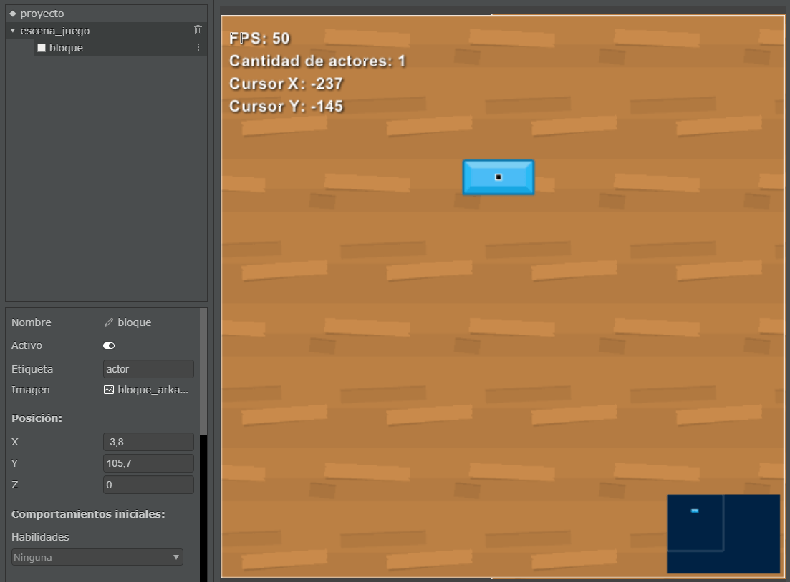
Este bloque será nuestra plantilla, ya que necesitamos varios de ellos y si la pelotita lo toca, las veces requeridas, desaparecerá. Para que haya muchos de él, nos dirigiremos al código de la escena del juego, seleccionaremos “escena_juego” desde el sector “Escena y actores”, y dentro de su código colocaremos lo siguiente dentro del método “iniciar()”.
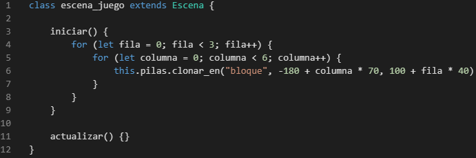
Este código hará que al iniciar la escena de juego, se clone el actor “bloque” varias veces en las posiciones indicadas. Se utilizan dos ciclos for anidados que se encargaran de esto.
Para que este código funcione, dentro de las propiedades del bloque, le agregaremos como “Etiqueta” un nombre, en este caso, le pondremos bloque. Además, como la generación de este actor la realizamos por código, dentro de sus propiedades desactivaremos “Activo”, y para que no se caigan, es decir, respete la gravedad, también desactivaremos la propiedad “Dinámica”.
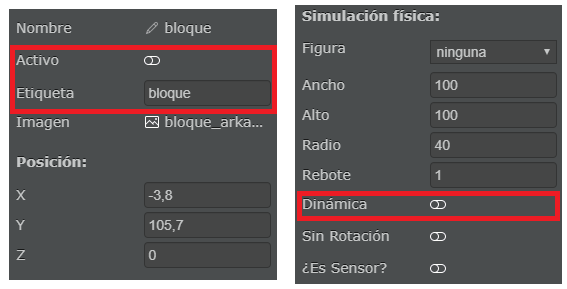
Con esto tendremos los bloques estacionarios que deberemos eliminar con nuestra pelotita.
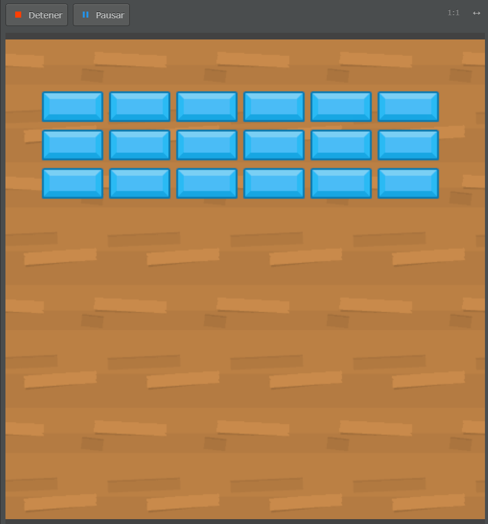
Segundo paso
Crearemos la paleta que controlará el jugador y nos permitirá que la pelotita no se caiga. Para esto, crearemos un actor de tipo “actor” como hicimos con el bloque. Le cambiaremos las siguientes propiedades:
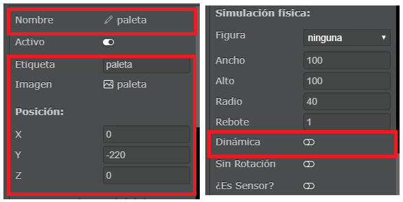
Agregando un nombre, una imagen, donde se encontrará en la pantalla y haciendo que no se caiga desactivando la propiedad “Dinámico”.
Teniendo el actor paleta seleccionado, podemos editar su código para darle comportamiento.
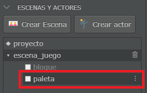
En el código, le daremos movimiento a la paleta dentro de su método “actualizar()”, colocando una velocidad a la cual se va a desplazar este actor, su movimiento sólo será de forma horizontal, y para que no salga de nuestra pantalla limitaremos dicho movimiento.
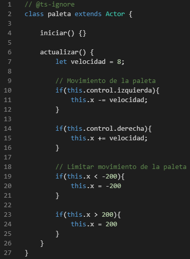
Tercer paso
Crearemos la pelotita con la cual podremos destruir los bloques. Esto lo realizaremos como con los anteriores actores, creando un actor de tipo “actor” y definiendo las siguientes propiedades:
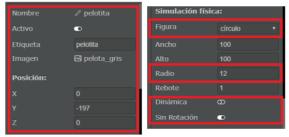
Este actor tendrá una habilidad dentro de sus propiedades, que hará que la pelotita oscile en su movimiento inicial. Para ello nos dirigimos a la propiedad “Habilidades” y le colocamos “oscilar rotación”.
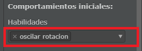
En Arkanoid siempre hay que presionar una tecla para comenzar el juego, ya que podemos posicionarnos en diferentes lugares para que la pelotita se dirija hacia donde nosotros deseamos. Para ello, haremos que el jugador deba presionar la barra espaciadora para que la pelotita comience a moverse.
Pero debemos colocar una restricción, la funcionalidad de la barra espaciadora sólo debe permitirse al comienzo del juego, es por ello, que le colocaremos a la paleta una fase “inicio”.
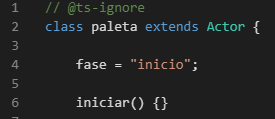
En este estado, la pelotita deberá seguir el movimiento de la paleta, colocaremos esto dentro del código de la paleta en el método “actualizar()” de la siguiente manera:
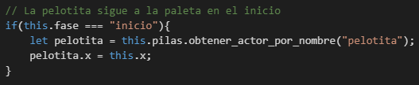
Ahora haremos que la pelotita salga disparada de la paleta cuando se presione la barra espaciadora. Esta funcionalidad se la colocaremos a la paleta dentro de un método que viene predefinido que se llama “cuando_pulsa_tecla()”.
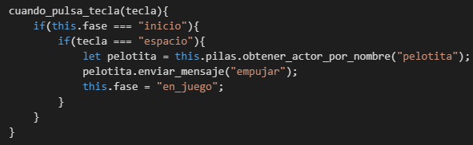
Este método pregunta si estamos en la fase de inicio, y si se presiona la barra espaciadora le envía a la pelotita un mensaje para que ésta comience su movimiento.
Vamos al código de la pelotita a colocar su funcionamiento de desplazamiento y que se quede estacionaria hasta que reciba el mensaje de la paleta de que puede empezar a moverse.
La parte relacionada al mensaje de la paleta lo pondremos en un método que posee pilas predefinido que es “cuando_llega_el_mensaje_empujar()” de la siguiente manera.
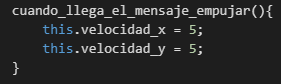
Y su movimiento en el método “actualizar()” utilizando los valores definidos dentro del método anterior, si no recibiera el mensaje de la paleta, la pelotita no tendría velocidad y por ello no se movería.
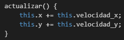
Para que todo esto funcione, la pelotita debe poseer figura física, así que se la agregaremos modificando sus propiedades en la sección “Simulación física”. Como figura le colocaremos un círculo y le ajustaremos el tamaño para que se adapte al que posee nuestro actor.
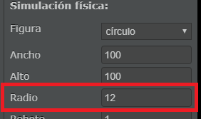
Ya que estamos en ello, también realizaremos lo mismo con los demás actores, eligiendo la figura que más se adapte y modificando su tamaño para que coincida con los mismos.
Como vemos, los actores ahora poseen un contorno de color azul por no ser dinámicos.
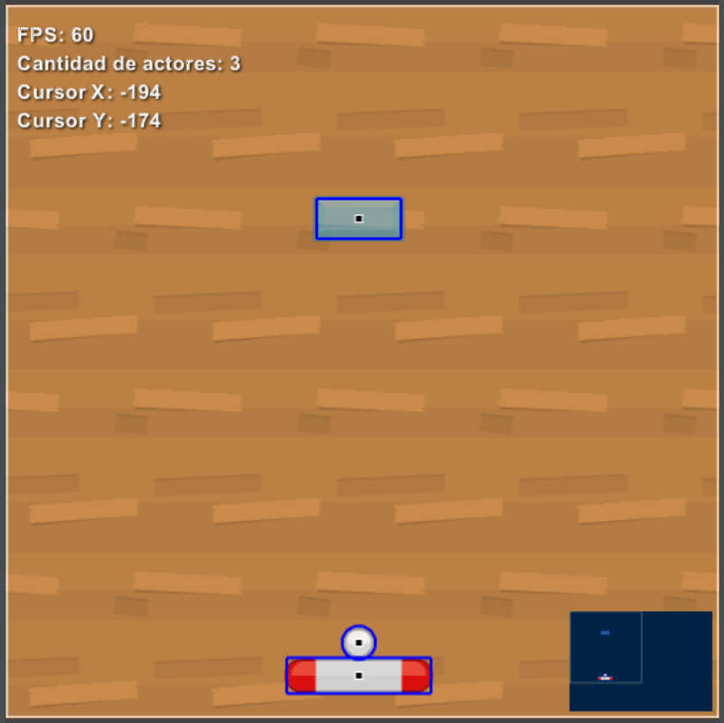
Para informar al jugador que debe presionar la barra espaciadora para comenzar a jugar, le colocaremos un mensaje informando ésto. Crearemos un actor del tipo “texto”, y le cambiaremos las siguientes propiedades:
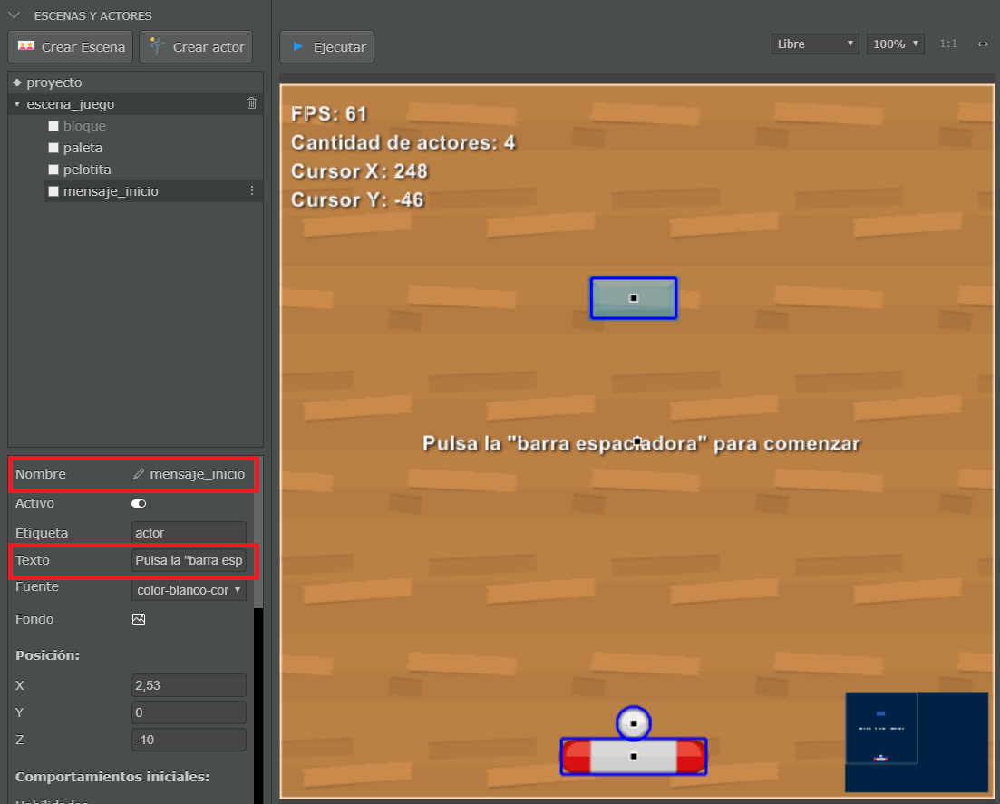
Y cuando el jugador presione la barra espaciadora, este mensaje deberá desaparecer. Para ello, agregamos en el código de la paleta un nuevo método, que llamaremos “eliminar_mensaje()”.
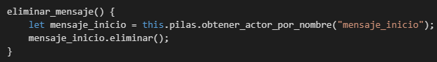
Este método lo llamaremos dentro de “cuando_pulsa_tecla()”, ya que aquí es cuando el jugador presiona la barra espaciadora.
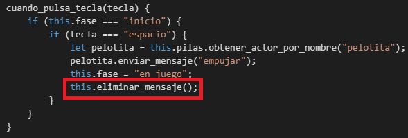
Como vemos, la pelotita sigue a nuestra paleta hasta que presionamos la barra espaciadora. Pero al hacer esto puede salir por los laterales, para que esto no ocurra vamos a crear un método que controle que la pelotita no salga del límite de la pantalla multiplicando la velocidad de la misma por -1 para que cambie su dirección en el horizontal, es decir, el eje x. Lo mismo para el eje y, pero solo cuando toca el límite superior, ya que si cruza el límite inferior el jugador perdería.
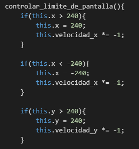
Además, para que este método sea invocado, lo incluiremos dentro del método “actualizar()” de la pelotita.
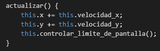
Cuarto paso
Ahora, lo que realizaremos son las colisiones entre la pelotita con la paleta y con los bloques. Primero nos enfocaremos a la colisión con la paleta.
Dentro del código de la pelotita crearemos otro método que se encargará de la funcionalidad de la colisión de la misma con la paleta de la siguiente manera. Primero, cuando la pelotita está por colisionar con la paleta, verificamos si esta última está en posición de poder empujar la pelotita hacia arriba o no. Luego, comprobamos si la pelotita está colisionando con la paleta, y de ser así, hacemos que quede justo en contacto con ella, invirtiendo el sentido de su movimiento vertical. De esta forma se dá el efecto de que la pelotita está rebotando en la paleta. Por último, modificamos la velocidad horizontal de la pelotita en base a la parte de la paleta con la que colisionó.
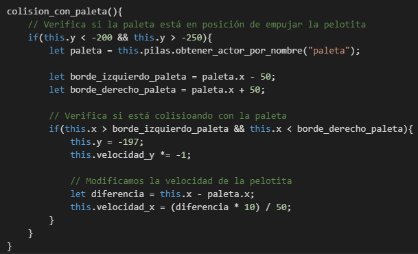
Este método, al igual que con el del paso anterior, hay que invocarlo dentro de “actualizar()”.
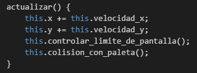
Siguiendo con las colisiones, vamos a agregar la funcionalidad de colisión entre la pelotita y los bloques. Por un lado, debemos controlar ese movimiento, y para ello, agregamos un método predefinido dentro del código de la pelotita que redireccionará a la misma dependiendo de qué lado del bloque toque.
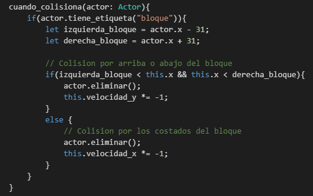
Quinto paso
Haremos que el jugador pueda perder, si no logra hacer que la pelotita rebote en la paleta. Esto lo haremos en una nueva escena que crearemos, vamos a “Crear Escena” y le pondremos como nombre “escena_perdio”.
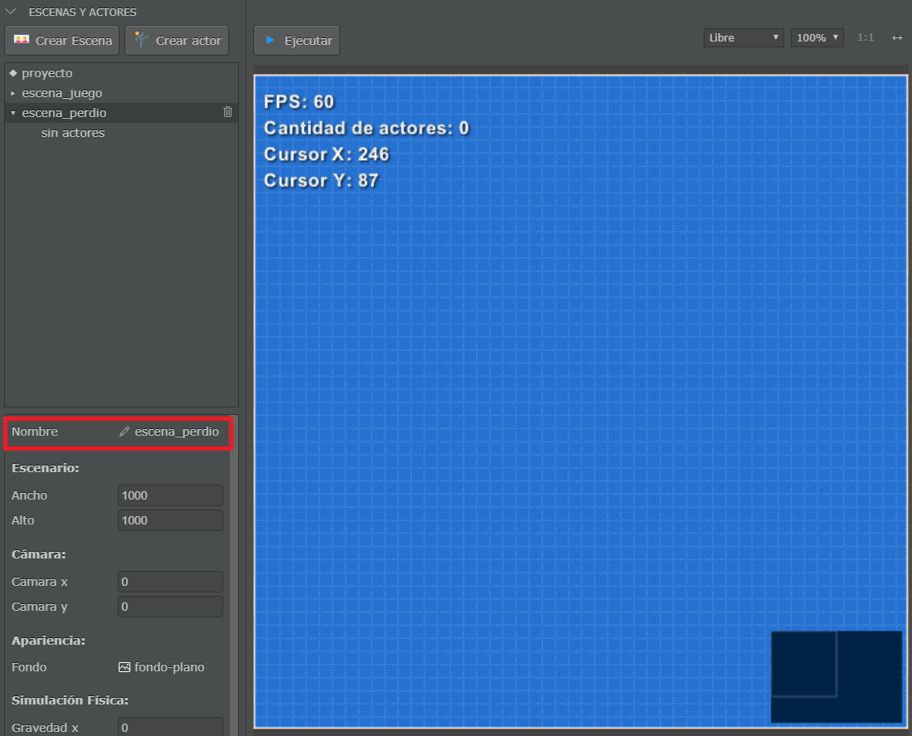
Crearemos un actor del tipo “texto”, para informar al jugador que ha perdido, y lo colocaremos donde se desee dentro de la escena.
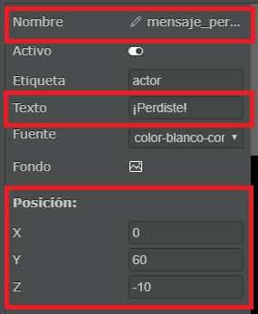
Además, agregaremos otro actor que nos permita reiniciar la escena y volver a jugar, este actor será de tipo “reiniciar_escena” que está predefinido, por lo tanto, no tendremos que modificar ninguna de sus propiedades.
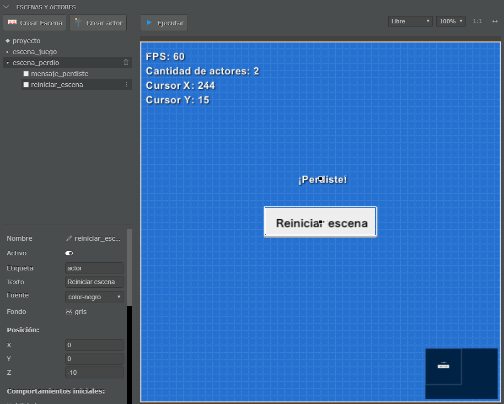
Para darle más impacto a esta situación, haremos que la paleta dé el efecto de una explosión al perder la pelotita y, por ende, el juego. Crearemos para ello, un actor del tipo “explosion” que también está predefinido, lo moveremos de posición solo para poder verlo en la creación de la escena.
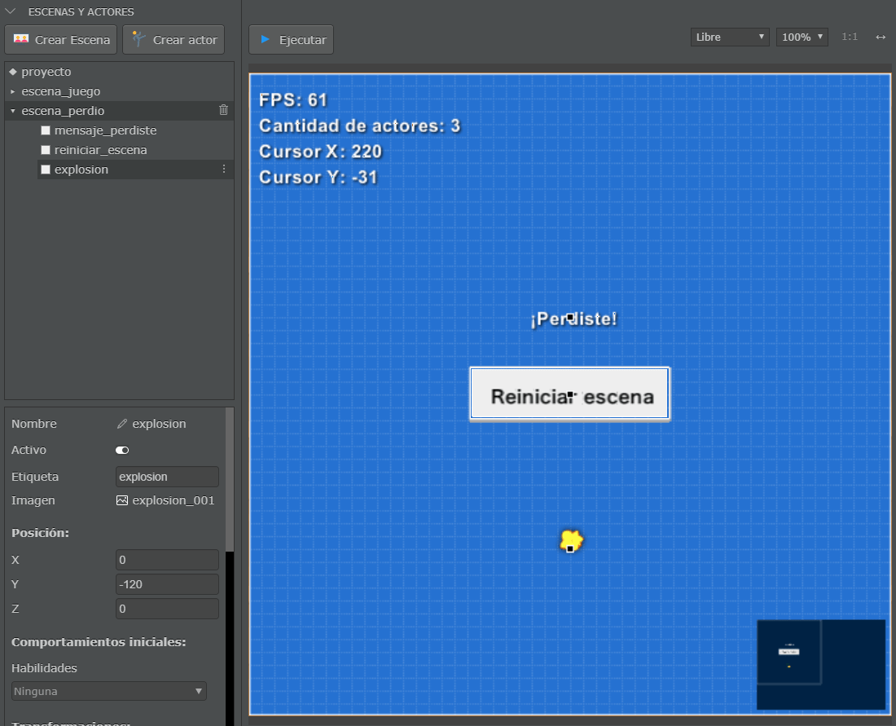
Agregaremos un nuevo método en el código de la pelotita para que cuando la misma salga fuera de la pantalla por el límite inferior, el jugador pierda. Este método informa que el jugador ha perdido, y la escena se encargará del resto.
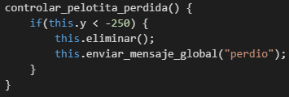
Este método, al igual que con otros que hemos realizado, hay que invocarlo dentro de “actualizar()”.
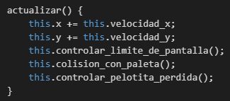
Como dijimos, debemos agregar funcionalidad en la escena de juego utilizando un nuevo método que traerá los elementos que creamos en la “escena_perdio” para informar al jugador dicha situación y le permita reiniciar el juego. además, coloca la explosión donde se encontraba la paleta en el momento que la pelotita salió de la pantalla, dando el efecto de que explota.
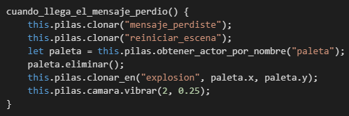
Sexto paso
Crearemos otra escena, esta vez para representar que el jugador ha ganado, lo cual sucede cuando todos los bloques son eliminados. Además, colocaremos un contador que indique la cantidad de bloques restantes, para darle información al jugador. Esto último lo haremos creando un actor de tipo “texto” dentro de la escena de juego, al cual llamaremos “contador_bloques” y colocaremos en la parte superior.
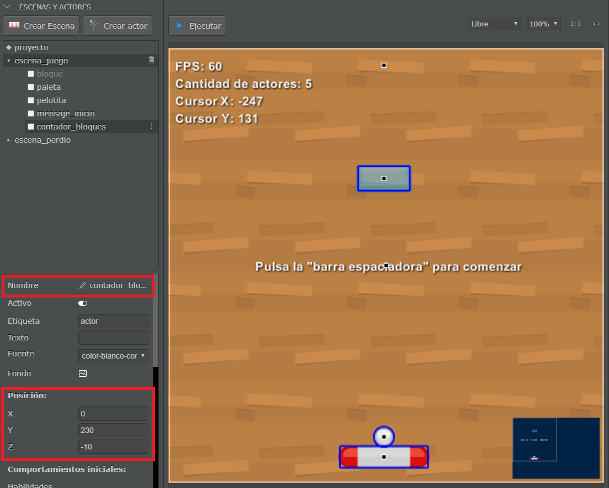
Dentro de su código, colocaremos el siguiente método para que se actualice cada vez que se elimine un bloque. Ve cuántos bloques hay en la pantalla y muestra ese valor junto con un mensaje. Ojo: se utiliza comilla invertida (`) en la línea 5.
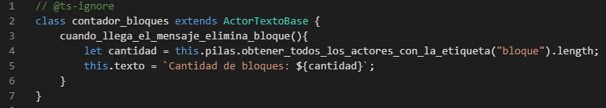
Para avisar a este actor que se ha eliminado un bloque, dentro del código de la pelotita, en el método “cuando_colisiona()”, incluiremos lo siguiente:
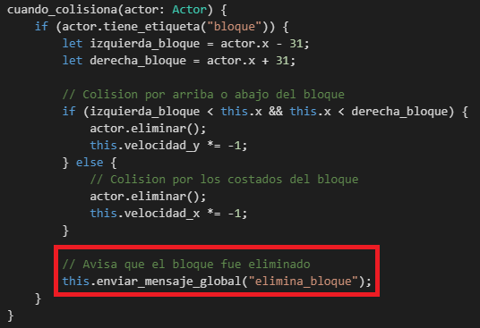
Con esto hecho, crearemos una escena para que, cuando no haya más bloques, muestre un mensaje al jugador avisándole que ha ganado. Llamaremos a este actor “escena_gano”.
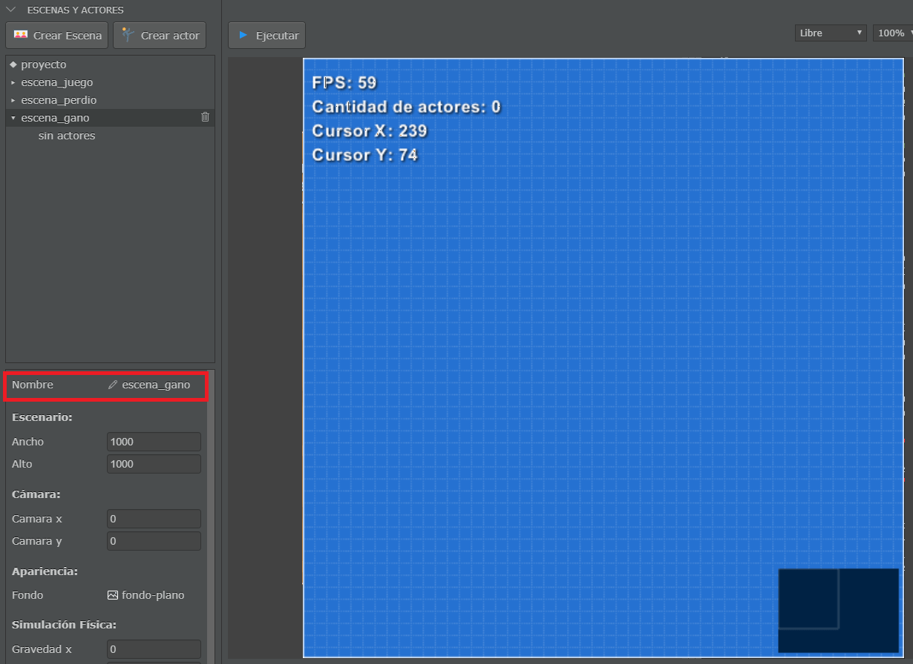
Dentro de esta escena crearemos otro actor del tipo “texto”, que llamaremos “mensaje_ganaste” y le colocaremos las siguientes propiedades:
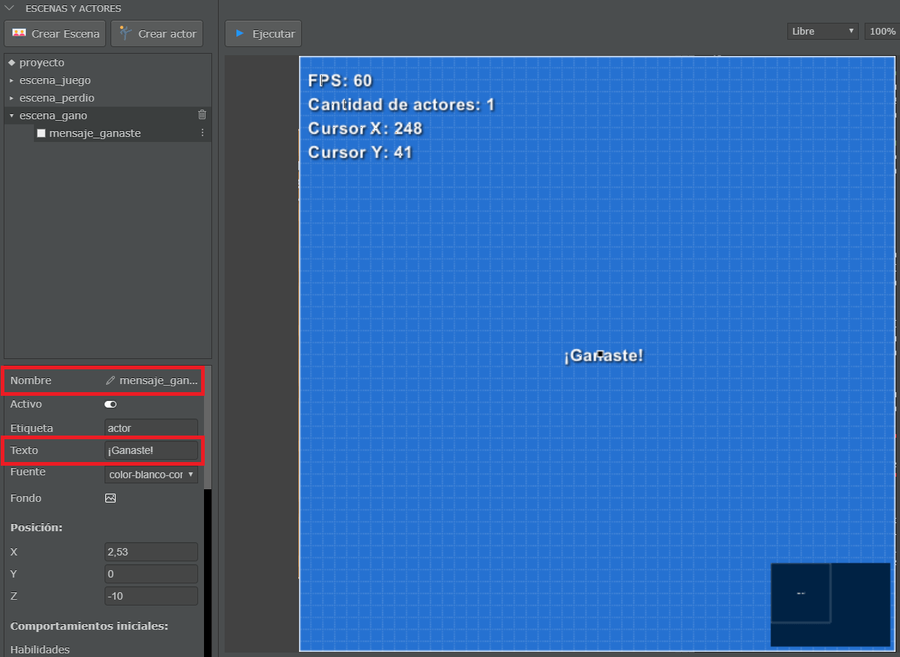
Por último, dentro del código de la escena del juego, llamaremos a este mensaje cuando no queden bloques por eliminar. Para ello, utilizamos el método que se envía cada vez que se elimina un bloque “cuando_llega_el_mensaje_elimina_bloque()”.
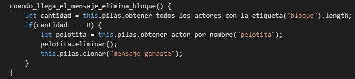
Podemos probar nuestro juego dando en el botón “Ejecutar”.
Séptimo paso
Como podemos observar, hemos hecho un arkanoid clásico muy similar a uno de los ejemplos que posee pilas-engine. Como dijimos al principio, la versión de arkanoid que queremos diseñar requiere que los bloques sean tocados una cierta cantidad de veces para ser eliminados, y esta funcionalidad es la que desarrollaremos en este último paso.
Primero, crearemos un nuevo actor del tipo “texto”, le colocaremos como nombre “vida_bloque” y le desactivaremos la propiedad de activo, ya que es una plantilla, y haremos más por código como con los bloques. Sus propiedades nos deben quedar de la siguiente manera.
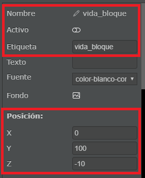
La generación de estas vidas las incluiremos en el código de la escena del juego, generando las mismas en las posiciones de los bloques de la siguiente manera.
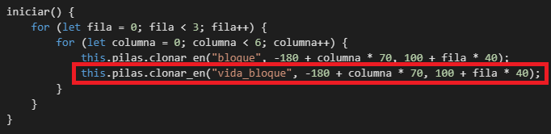
Como este actor representa las vidas del bloque, al iniciarse necesitamos que posea un valor numérico y lo muestre. Para ello, en su código colocaremos el método “iniciar” y en su contenido generaremos un número al azar entre el 1 y 5 (estos valores pueden modificarse a gusto) de la siguiente manera.
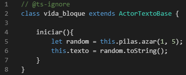
Dentro del código de la pelotita, crearemos un nuevo método llamado “actualizar_vida_bloque(actor: Actor)” que tendrá como parámetro un actor, en este caso el bloque con el cual colisiona, que tendrá la nueva funcionalidad de disminuir las vidas del bloque hasta eliminarlo. Este método busca los actores en la posición del actor, que en este caso son el bloque que se pasó como parámetro y su actor vida, por lo tanto, este arreglo contendrá 2 actores, “bloque” y “vida_bloque”. Nosotros necesitamos la vida del bloque, por ello buscamos en qué posición del arreglo está. Una vez que obtenemos el actor “vida_bloque”, actualizamos su valor, y si es cero eliminamos tanto al bloque como su vida.
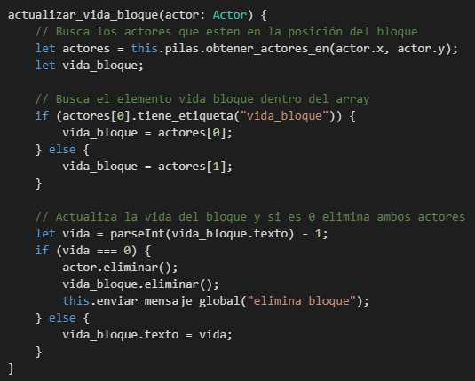
Además, crearemos otro método al que llamaremos “reposicionar()” dentro del código de la pelotita. Este método nos ayuda a despegar la pelotita del bloque cuando colisionan, utilizando la misma velocidad con la que se mueve, para que no se produzcan múltiples colisiones al mismo tiempo debido que el bloque no se eliminó.
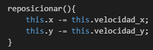
Por último, utilizaremos los 2 métodos anteriormente creados para modificar la funcionalidad que realiza hasta ahora nuestro juego. Para ello, modificaremos el método “cuando_coliciona(actor: Actor)” reemplazando la parte que eliminaba el bloque por los nuevos métodos, y eliminando el mensaje global de que el bloque fue eliminado, ya que el mismo ahora se encuentra en el método “actualizar_vida_bloque(actor: Actor)” debido a que los bloques ahora poseen vidas y eventualmente se eliminan ahí.
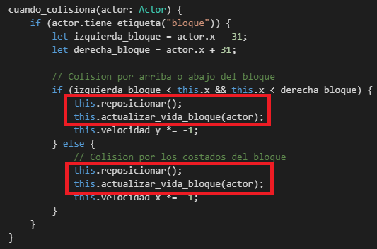
Podemos probar nuestro juego dando en el botón “Ejecutar”.
Esto es todo, de esta forma ya tenemos un pequeño juego del típico Arkanoid, el cual se puede mejorar incluyendo nuevas funcionalidades o haciendo más visible el código.
¡Muchas gracias!